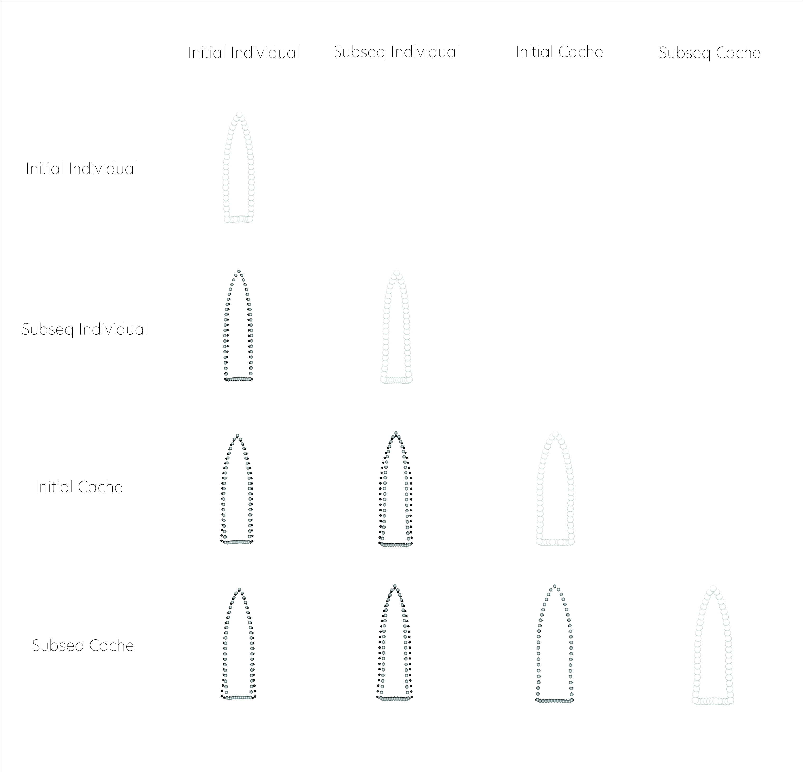

Gahagan bifaces and the evolution of Caddo preference
Supplementary Materials
Robert Z. Selden, Jr. ![]()
John E. Dockall
Reproducibility—the ability to recompute results—and replicability—the chances other experimenters will achieve a consistent result—are two foundational characteristics of successful scientific research (Leek and Peng 2015).
Basis of Inquiry
Exchange networks and interaction spheres functioned to establish, maintain, and formalize regional traditions, boundaries, and intergroup relationships. Large formal bifaces and associated diagnostics included as mortuary offerings provide evidence of material culture shifts, conveying the spatial and temporal dynamics of local and regional burial traditions. Among constituent groups associated with the Caddo Nation, contextual differences in burial practices are indicative of two discrete burial traditions; one where a Gahagan biface was placed atop or alongside an individual, and another where a cache of Gahagan bifaces was included along the northern wall of the burial feature. This study asks whether mortuary assemblage diversity increased through time, whether Gahagan biface morphology differs by burial tradition, and whether the morphology of Gahagan bifaces associated with each burial tradition changed through time. A seriation of mortuary contexts followed by an analysis of mortuary assemblage diversity highlights a significant increase in mortuary assemblage diversity and evenness through time, where assemblages from the earliest mortuary offerings express lower diversity and evenness than those from later contexts. Results also indicate that Gahagan biface shape differs between the two Caddo burial traditions, indicating discrete communities of practice delimited by placement and morphology. Bifaces included as offerings with individuals differ through time from those placed in caches; initially in size, and subsequently in shape. Bifaces found in caches express morphological stability through time as burial traditions mature, and Caddo mortuary offerings become both more diverse and evenly distributed among the diagnostic types. These findings provide the basis for a discussion of the establishment, maintenance, and evolution of a unique Caddo burial practice that occurs during their transition from a more mobile horticulture-based lifeway to one of emergent—and increasingly sedentary—agriculture.

Caddo behavioral regions. Bifaces recovered atop or alongside an individual denoted by black dot. For reference to scale, the Gahagan biface at bottom left (m3) measures just over 48cm. Additional information for each biface, including the option to download full-resolution 2D images of individual bifaces, can be found at https://scholarworks.sfasu.edu/ita-gahaganbiface/.Primary findings

ASSEMBLAGE DIVERSITY
Hypothesis: Caddo mortuary assemblages associated with Gahagan bifaces increase in diversity subsequent to their initial use in mortuary offerings.
This hypothesis is tested using counts of attributes and associated diagnostic artefacts recovered from Caddo mortuary contexts at the Mounds Plantation, George C. Davis, and Gahagan Mounds site where Gahagan bifaces were included as part of the mortuary assemblage. The hypothesis assesses whether diagnostic material culture objects included with Caddo burials became more diverse and evenly distributed among the types as burial practices evolved.

Findings:
- Juveniles are not present in the three latest assemblages that include Gahagan bifaces
- Lithics comprise 75% or more—in three cases, 100%—of those Caddo burial assemblages where Gahagan bifaces were recovered
- Caddo mortuary contexts that occur following initial deposition include a significantly greater diversity of associated diagnostics
- Caddo mortuary contexts that occur following initial deposition include significantly greater evenness across the types
Summary of results
The hypothesis was tested using counts of associated diagnostic artefacts recovered from Caddo mortuary contexts at the Mounds Plantation, George C. Davis, and Gahagan Mound sites where Gahagan bifaces were included as part of the mortuary assemblage. The hypothesis assessed whether diagnostic material culture objects included with Caddo burials became more diverse and evenly distributed among the types as burial practices evolved. Results follow with an expected increase in assemblage diversity during the cultural and subsistence-based transition from mobile horticulture to emergent—and more sedentary—agricultural communities.
Results demonstrate that lithics comprise 75% or more, in three cases, 100%, of those Caddo burial assemblages where Gahagan bifaces were recovered, as well as a significant increase in the diversity and evenness of diagnostic artefacts included in Caddo burial contexts with Gahagan bifaces. This general trend articulates with the development, maintenance, and evolution associated with a Caddo burial practice. These assemblages are dominated by lithic diagnostics, and ceramics are absent from three of the burial contexts. Further discussion related to those diagnostic types that do/do not transcend specific spatial and temporal boundaries are included in the manuscript.
OBJECT PLACEMENT
Hypothesis: Gahagan bifaces included in Caddo burials as part of a cache differ in morphology from those placed atop or alongside an individual.
This hypothesis is tested using Gahagan bifaces recovered from two discrete contexts; one interred as part of a cache, and the other placed atop or alongside individuals. Distinct Caddo burial practices may have constrained local morphological requirements, highlighting differential shape preference.
Findings:
- Gahagan bifaces **differ significantly in *shape** between cache and individual contexts
- Gahagan bifaces do not differ in size between cache and individual contexts
- Gahagan bifaces from individual contexts exhibit significantly greater size diversity

Summary of results
Contextual differences suggest two distinct Caddo burial traditions associated with Gahagan bifaces; one more prevalent in the northern behavioral region where Gahagan bifaces were placed atop or alongside an individual, and one more prevalent in the southern behavioral region where all but six Gahagan bifaces were included as a cache offering along the northern periphery of the burial. Each burial tradition appears to have been bounded by its’ own community of practice relating both to placement and the design (shape) of Gahagan bifaces interred in each context.
TEMPORAL TRAJECTORIES
Hypothesis 1 (Morphology): Gahagan bifaces from individual and cache contexts differ through time—initial vs. subsequent deposition—as mortuary assemblage diversity increases.
Hypothesis 2 (Morphological Diversity): Morphological diversity in Gahagan bifaces increases through the technological life cycle
These hypotheses are tested using Gahagan bifaces recovered from four discrete contexts; the first interred with an individual in the earliest (initial) burial context at each site, the second interred as part of a cache in the earliest (initial) burial context at each site, the third interred with an individual in subsequent burial contexts, and the fourth interred as a cache in subsequent burial contexts. Distinct Caddo burial practices may have been constrained by local morphological requirements, highlighting aspects of differential shape preference as the diversity of Caddo mortuary assemblages increased.
The analysis employs four discrete categories to assess morphological changes through time:
- Initial Individual: from initial burial contexts that included Gahagan bifaces at each site, and interred atop or alongside an individual
- Initial Cache: from initial burial contexts that included Gahagan bifaces at each site, and interred as part of a cache along the northern wall of the burial feature
- Subsequent Individual: from subsequent burial contexts that included Gahagan bifaces at each site, and interred atop or alongside an individual
- Subsequent Cache: from subsequent burial contexts that included Gahagan bifaces at each site, and interred as part of a cache along the northern wall of the burial feature
Findings:
Morphology:
- Gahagan bifaces from Initial Cache and Subsequent Individual contexts differ significantly in shape
- Gahagan bifaces from Subsequent Cache and Subsequent Individual contexts differ significantly in shape
- Gahagan bifaces from Initial Cache and Initial Individual contexts differ significantly in size
- Gahagan bifaces from Initial Individual and Subsequent Cache contexts differ significantly in size
- Gahagan bifaces from Initial Individual and Subsequent Individual contexts differ significantly in size
Morphological Diversity:
- Gahagan bifaces from subsequent contexts are not more diverse in shape than those from initial contexts
- Gahagan bifaces from initial contexts placed atop/alongside individuals exhibit significantly greater size diversity than those from initial cache contexts, as well as those from subsequent individual and cache contexts

Summary of results
These hypotheses were tested using Gahagan bifaces recovered from four discrete contexts; the first interred with an individual from the earliest (initial) burial context at each site, the second interred as part of a cache in the earliest (initial) burial context at each site, the third interred with an individual in subsequent burial contexts, and the fourth interred as a cache in subsequent burial contexts. Distinct Caddo burial practices may have been constrained by local morphological requirements, highlighting aspects of differential preference as Caddo mortuary assemblage diversity increased.
Results demonstrate that in the earliest Caddo burials that included Gahagan bifaces, those bifaces placed atop or alongside an individual differ significantly in size (are larger) when compared with those placed in caches found along the northern wall of the burial pit.
In the later burials that included Gahagan bifaces, those bifaces placed atop or alongside an individual differ significantly in shape when compared with those placed in caches found along the northern wall of the burial pit.
Caches of Gahagan bifaces found along the northern wall of Caddo burial pits exhibit morphological stability through time in that they differ neither in shape nor size as the diversity of Caddo mortuary assemblages increases.
The hypothesis that morphological diversity in Gahagan bifaces increases through the technological life cycle is rejected. Gahagan bifaces from initial contexts that were placed atop or alongside an individual expressed a greater diversity in size than all other categories. Thus, for the comparison of Gahagan biface morphological diversity through time among contexts, those found with individuals express stability in shape, but the inverse of the hypothesis in size (becoming less diverse in size through time), while those from cache contexts express morphological stability in both shape and size through time.
The temporal attribute used for the GM analysis is comprised of the same initial and subsequent contexts used in the analysis of Caddo mortuary assemblage diversity. That there are no cache offerings of Gahagan bifaces associated with the northern behavioural region raises questions regarding whether the spatial boundary may have been permeable, but in only one direction.
THE EVOLUTION OF CADDO PREFERENCE
Hypothesis: Gahagan bifaces from cache contexts increase in size through time, suggesting directional selection in preference by the Caddo.
This hypothesis is tested using only those Gahagan bifaces recovered from burial caches. The hypothesis assesses whether mean Gahagan biface size increased through each temporal component, which would suggest directional selection, and provide evidence for the evolution of Caddo preference related to bifaces.
Findings:
- Gahagan bifaces differ significantly in size between caches
- Mean Gahagan biface size increases through each temporal component, suggesting directional selection

Summary of results
Temporal differences demonstrate a significant size difference in the Gahagan bifaces from the latest context at George C. Davis. When plotted by temporal context, mean Gahagan biface size increases incrementally, suggesting directional selection. This demonstrates that the evolution of Caddo preference was driven by size. Since burial caches have only been recovered from the southern behavioral region, findings are spatially restricted.
Acknowledgments
RZS extends his gratitude to the Caddo Nation of Oklahoma, the Caddo Nation Tribal Council, Tribal Chairman, and Tribal Historic Preservation Office for their guidance related to the development of the 3D scanning protocols, for permission and access to NAGPRA and previously repatriated collections, and for frank discussions related to language surrounding burial contexts associated with Caddo children. Additional thanks to the Williamson Museum at Northwestern State University, Louisiana State Exhibit Museum, Texas Archeological Research Laboratory at The University of Texas at Austin, Brazos Valley Museum of Natural History, Texas Parks and Wildlife Department, and Sam Noble Oklahoma Museum of Natural Science for providing access to the Gahagan bifaces. RZS expresses his gratitude to Carmen G. Montaña for discussions and guidance regarding measures of biological diversity and their application, and to Harry J. Shafer, Hiram F. (Pete) Gregory, Christian S. Hoggard, and David K. Thulman for their comments and constructive criticisms on the analyses of Gahagan biface morphology.
RZS thanks Christian S. Hoggard and David K. Thulman for their thoughtful comments and constructive criticisms of the landmarking protocol used in this study (LM3d1), as well as the landmarking protocol for Gahagan bifaces that will be used in subsequent analytical efforts (LM3d2); to Martin Hinz for fielding questions related to the oxcAAR package, and to Emma Sherratt, Kersten Bergstrom, Dean C. Adams, and Michael L. Collyer for their constructive criticisms, general comments, and suggestions throughout the development of this research program.
Funding
Components of this analytical work flow were developed and funded by a Preservation Technology and Training grant (P14AP00138) to RZS from the National Center for Preservation Technology and Training (NCPTT), and additional grants to RZS from the Caddo Nation of Oklahoma, National Forests and Grasslands in Texas (15-PA-11081300-033) and the United States Forest Service (20-PA-11081300-074). Funding to scan the Gahagan bifaces at the Williamson Museum at Northwestern State University, Louisiana State Exhibit Museum, Texas Archeological Research Laboratory at The University of Texas at Austin, and Sam Noble Oklahoma Museum of Natural Science was provided to the RZS by the Heritage Research Center at Stephen F. Austin State University.
Data management
The analysis code associated with this project can be accessed through this document or the GitHub repository, which is digitally curated on the Open Science Framework DOI: 10.17605/OSF.IO/Y7B39. The reproducible nature of this undertaking provides a means for others to critically assess and evaluate the various analytical components (Gray and Marwick 2019; Peng 2011; Gandrud 2014), which is a necessary requirement for the production of reliable knowledge.
Reproducibility projects in psychology and cancer biology are impacting current research practices across all domains. Examples of reproducible research are becoming more abundant in archaeology (Marwick 2016; Ivanovaitė et al. 2020; Selden Jr., Dockall, and Shafer 2018; Selden Jr., Dockall, and Dubied 2020; Selden Jr et al. 2021), and the next generation of archaeologists are learning those tools and methods needed to reproduce and/or replicate research results (Marwick et al. 2019). Reproducible and replicable research work flows are often employed at the highest levels of humanities-based inquiries to mitigate concern or doubt regarding proper execution, and is of particular import should the results have—explicitly or implicitly—a major impact on scientific progress (Peels and Bouter 2018).
Colophon
This version of the analysis was generated on 2023-05-06 06:16:27 using the following computational environment and dependencies:
# which R packages and versions were used?
if ("devtools" %in% installed.packages()) devtools::session_info()─ Session info ───────────────────────────────────────────────────────────────
setting value
version R version 4.2.3 (2023-03-15)
os macOS Ventura 13.3.1
system aarch64, darwin20
ui X11
language (EN)
collate en_US.UTF-8
ctype en_US.UTF-8
tz America/Chicago
date 2023-05-06
pandoc 2.19.2 @ /Applications/RStudio.app/Contents/Resources/app/quarto/bin/tools/ (via rmarkdown)
─ Packages ───────────────────────────────────────────────────────────────────
package * version date (UTC) lib source
cachem 1.0.8 2023-05-01 [1] CRAN (R 4.2.0)
callr 3.7.3 2022-11-02 [1] CRAN (R 4.2.0)
cli 3.6.1 2023-03-23 [1] CRAN (R 4.2.0)
crayon 1.5.2 2022-09-29 [1] CRAN (R 4.2.0)
devtools 2.4.5 2022-10-11 [1] CRAN (R 4.2.0)
digest 0.6.31 2022-12-11 [1] CRAN (R 4.2.0)
ellipsis 0.3.2 2021-04-29 [1] CRAN (R 4.2.0)
evaluate 0.20 2023-01-17 [1] CRAN (R 4.2.0)
fastmap 1.1.1 2023-02-24 [1] CRAN (R 4.2.0)
fs 1.6.2 2023-04-25 [1] CRAN (R 4.2.0)
glue 1.6.2 2022-02-24 [1] CRAN (R 4.2.0)
htmltools 0.5.5 2023-03-23 [1] CRAN (R 4.2.0)
htmlwidgets 1.6.2 2023-03-17 [1] CRAN (R 4.2.0)
httpuv 1.6.9 2023-02-14 [1] CRAN (R 4.2.0)
jsonlite 1.8.4 2022-12-06 [1] CRAN (R 4.2.0)
knitr 1.42 2023-01-25 [1] CRAN (R 4.2.0)
later 1.3.0 2021-08-18 [1] CRAN (R 4.2.0)
lifecycle 1.0.3 2022-10-07 [1] CRAN (R 4.2.0)
magrittr 2.0.3 2022-03-30 [1] CRAN (R 4.2.0)
memoise 2.0.1 2021-11-26 [1] CRAN (R 4.2.0)
mime 0.12 2021-09-28 [1] CRAN (R 4.2.0)
miniUI 0.1.1.1 2018-05-18 [1] CRAN (R 4.2.0)
pkgbuild 1.4.0 2022-11-27 [1] CRAN (R 4.2.0)
pkgload 1.3.2 2022-11-16 [1] CRAN (R 4.2.0)
prettyunits 1.1.1 2020-01-24 [1] CRAN (R 4.2.0)
processx 3.8.1 2023-04-18 [1] CRAN (R 4.2.3)
profvis 0.3.7 2020-11-02 [1] CRAN (R 4.2.0)
promises 1.2.0.1 2021-02-11 [1] CRAN (R 4.2.0)
ps 1.7.5 2023-04-18 [1] CRAN (R 4.2.0)
purrr 1.0.1 2023-01-10 [1] CRAN (R 4.2.0)
R6 2.5.1 2021-08-19 [1] CRAN (R 4.2.0)
Rcpp 1.0.10 2023-01-22 [1] CRAN (R 4.2.0)
remotes 2.4.2 2021-11-30 [1] CRAN (R 4.2.0)
rlang 1.1.1 2023-04-28 [1] CRAN (R 4.2.0)
rmarkdown 2.21 2023-03-26 [1] CRAN (R 4.2.2)
rstudioapi 0.14 2022-08-22 [1] CRAN (R 4.2.0)
sessioninfo 1.2.2 2021-12-06 [1] CRAN (R 4.2.0)
shiny 1.7.4 2022-12-15 [1] CRAN (R 4.2.0)
stringi 1.7.12 2023-01-11 [1] CRAN (R 4.2.0)
stringr 1.5.0 2022-12-02 [1] CRAN (R 4.2.0)
urlchecker 1.0.1 2021-11-30 [1] CRAN (R 4.2.0)
usethis 2.1.6 2022-05-25 [1] CRAN (R 4.2.0)
vctrs 0.6.2 2023-04-19 [1] CRAN (R 4.2.0)
xfun 0.39 2023-04-20 [1] CRAN (R 4.2.0)
xtable 1.8-4 2019-04-21 [1] CRAN (R 4.2.0)
yaml 2.3.7 2023-01-23 [1] CRAN (R 4.2.0)
[1] /Library/Frameworks/R.framework/Versions/4.2-arm64/Resources/library
──────────────────────────────────────────────────────────────────────────────Current Git commit details are:
# where can I find this commit?
if ("git2r" %in% installed.packages() & git2r::in_repository(path = ".")) git2r::repository(here::here()) Local: main /Users/seldenjrz/Documents/github/gahaganmorph.3
Remote: main @ origin (https://github.com/seldenlab/gahaganmorph.3)
Head: [968af6f] 2023-04-04: <edit index>References
Gandrud, Christopher. 2014. Reproducible Research with r and RStudio. The r Series. London: CRC Press.
Gray, Charles T., and Ben Marwick. 2019. “Truth, Proof, and Reproducibility: There’s No Counter-Attack for the Codeless.” In Statistics and Data Science, 111–29. Communications in Computer and Information Science. https://doi.org/10.1007/978-981-15-1960-4_8.
Ivanovaitė, Livija, Kamil Serwatka, Christian Steven Hoggard, Florian Sauer, and Felix Riede. 2020. “All These Fantastic Cultures? Research History and Regionalization in the Late Palaeolithic Tanged Point Cultures of Eastern Europe.” European Journal of Archaeology 23 (2): 162–85. https://doi.org/10.1017/eaa.2019.59.
Leek, Jeffrey T., and Roger D. Peng. 2015. “Opinion: Reproducible Research Can Still Be Wrong: Adopting a Prevention Approach.” Proc Natl Acad Sci U S A 112 (6): 1645–46. https://doi.org/10.1073/pnas.1421412111.
Marwick, Ben. 2016. “Computational Reproducibility in Archaeological Research: Basic Principles and a Case Study of Their Implementation.” Journal of Archaeological Method and Theory 24 (2): 424–50. https://doi.org/10.1007/s10816-015-9272-9.
Marwick, Ben, Li-Ying Wang, Ryan Robinson, and Hope Loiselle. 2019. “How to Use Replication Assignments for Teaching Integrity in Empirical Archaeology.” Advances in Archaeological Practice 8 (1): 78–86. https://doi.org/10.1017/aap.2019.38.
Peels, Rik, and Lex Bouter. 2018. “Humanities Need a Replication Drive Too.” Nature 558 (7710): 372. https://doi.org/10.1038/d41586-018-05454-w.
Peng, Roger D. 2011. “Reproducible Research in Computational Science.” Science 334 (6060): 1226–27. https://doi.org/10.1126/science.1213847.
Selden Jr, Robert Z., John E. Dockall, C. Britt Bousman, and Timothy K. Perttula. 2021. “Shape as a function of time + raw material + burial context? An exploratory analysis of Perdiz arrow points from the ancestral Caddo area of the American Southeast.” Journal Article. Journal of Archaeological Science: Reports 37: 102916. https://doi.org/10.1016/j.jasrep.2021.102916.
Selden Jr., Robert Z., John E. Dockall, and Morgane Dubied. 2020. “A Quantitative Assessment of Intraspecific Morphological Variation in Gahagan Bifaces from the Southern Caddo Area and Central Texas.” Southeastern Archaeology 39 (2): 125–45. https://doi.org/10.1080/0734578x.2020.1744416.
Selden Jr., Robert Z., John E. Dockall, and Harry J. Shafer. 2018. “Lithic Morphological Organisation: Gahagan Bifaces from the Southern Caddo Area.” Digital Applications in Archaeology and Cultural Heritage 10: e00080. https://doi.org/10.1016/j.daach.2018.e00080.